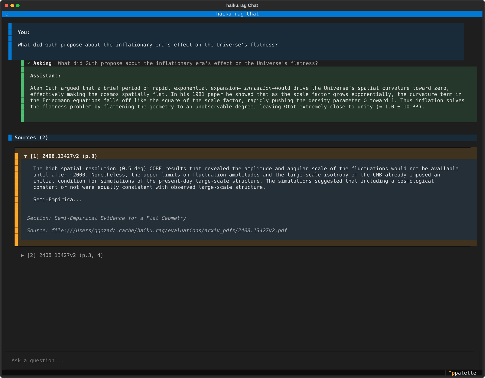
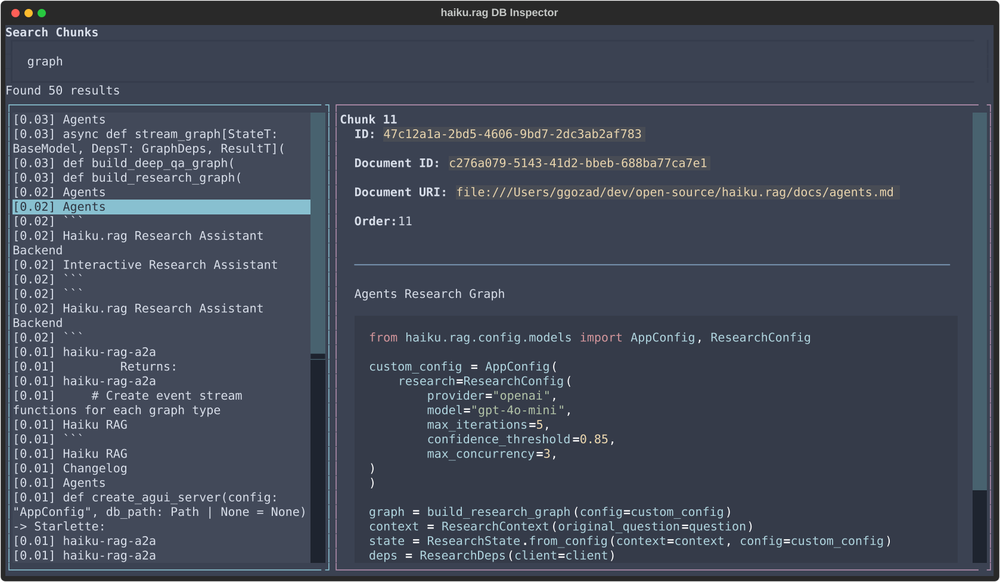
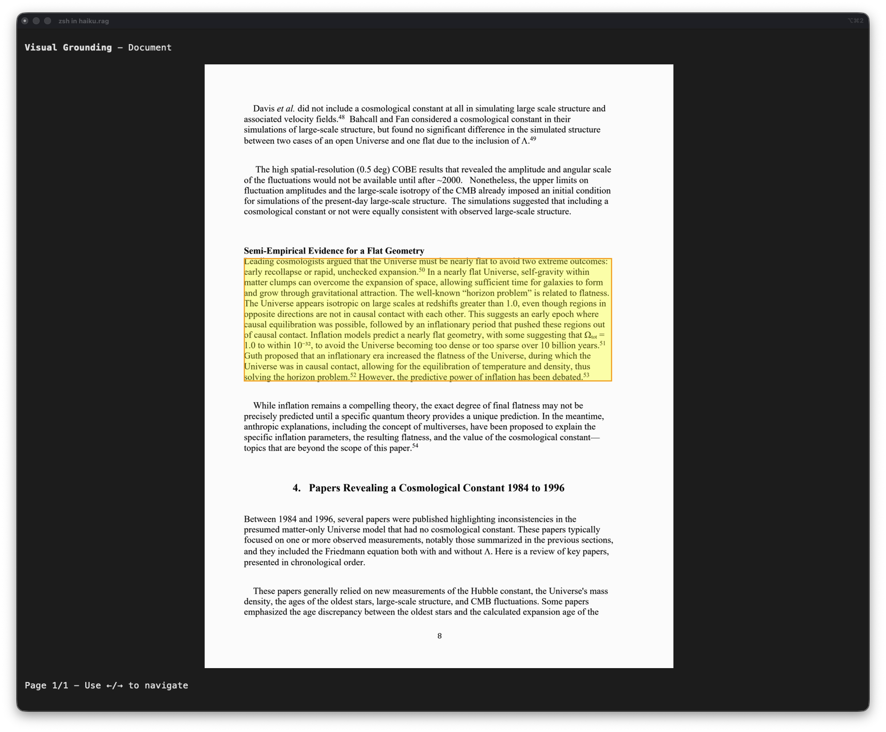

Applications
Three interactive applications for working with your knowledge base.
Chat TUI
Conversational RAG from the terminal with streaming responses and session memory.
Note
Requires the tui extra: pip install haiku.rag-slim[tui] (included in full haiku.rag package)
Usage
haiku-rag chat
haiku-rag chat --db /path/to/database.lancedb
# Enable analysis skill (code execution)
haiku-rag chat -s rag -s analysis
# Analysis only
haiku-rag chat -s analysis
Interface
The chat interface provides:
- Streaming responses with real-time tool execution indicators
- Expandable citations showing source document, pages, and headings
- Session memory for context-aware follow-up questions
- Visual grounding to inspect chunk source locations

Demo: Chatting with an agent over 1000 arXiv papers. Shows context building (3:00), citations with visual grounding (3:20), and document listing/retrieval.
Command Palette
Press Ctrl+P to open the command palette:
| Command | Description |
|---|---|
| View state | View the current session state |
| Filter documents | Select documents to restrict searches |
| Show database info | View document/chunk counts and storage info |
| Visual grounding | View chunk source location in document |
| Clear chat | Clear chat history and reset session |
Session Management
- Conversation history is maintained in memory for the session
- Citations are tracked per response and can be inspected
- Document filter restricts all searches to selected documents
- Clearing chat resets session state
Web Application
Browser-based conversational RAG with a CopilotKit frontend.
Features
- Streaming chat with real-time tool execution visibility
- Expandable citations with source documents, pages, and headings
- Visual grounding to view chunk source locations in documents
- Document filter to restrict searches to selected documents
- Session state view for inspecting citations and search results
Quick Start
- Frontend: http://localhost:3000
- Backend: http://localhost:8001
Architecture
- Backend: Starlette server with pydantic-ai
AGUIAdapter - Frontend: Next.js with CopilotKit
- Protocol: AG-UI for streaming chat
Configuration
Create a .env file in the app/ directory:
# API Keys (at least one required)
ANTHROPIC_API_KEY=your-anthropic-key
OPENAI_API_KEY=your-openai-key
# Database path
DB_PATH=/path/to/your/haiku.rag.lancedb
# Optional: Ollama base URL (if using local models)
OLLAMA_BASE_URL=http://localhost:11434
# Optional: Logfire for observability
LOGFIRE_TOKEN=your-logfire-token
For full configuration, mount a haiku.rag.yaml file:
API Endpoints
| Endpoint | Method | Description |
|---|---|---|
/v1/chat/stream |
POST | AG-UI chat streaming |
/api/documents |
GET | List all documents |
/api/info |
GET | Database statistics |
/api/visualize/{chunk_id} |
GET | Visual grounding images (base64) |
/health |
GET | Health check |
Development
Hot reload: The backend reloads automatically on file changes. For frontend changes:
Logfire debugging: If LOGFIRE_TOKEN is set, LLM calls are traced and available in the Logfire dashboard.
Inspector
TUI for browsing documents, chunks, and search results.
Note
Requires the tui extra: pip install haiku.rag-slim[tui] (included in full haiku.rag package)
Usage
Interface
Three panels display your data:
- Documents (left) - All documents in the database
- Chunks (top right) - Chunks for the selected document
- Detail View (bottom right) - Full content and metadata

Navigation
| Key | Action |
|---|---|
Tab |
Cycle between panels |
↑ / ↓ |
Navigate lists |
/ |
Open search modal |
c |
Context expansion modal (when viewing a chunk) |
v |
Visual grounding modal (when viewing a chunk) |
q |
Quit |
Mouse: Click to select, scroll to view content.
Search
Press / to open the full-screen search modal:
- Enter your query and press
Enterto search - Left panel: Search results with relevance scores
[0.95] content preview - Right panel: Full chunk content and metadata
- Use
↑/↓to navigate results - Press
Enteron a result to navigate to that document/chunk - Press
Escto close search
Search uses hybrid (vector + full-text) search across all chunks.
Context Expansion
Press c while viewing a chunk to see the expanded context that would be provided to the QA agent:
- Section-aware expansion: expands to fill the current document section
- Noise filtering: footnotes, page headers/footers excluded from structured documents
- Includes metadata like source document, content type, and relevance score
Visual Grounding
Visual grounding shows exactly where a chunk appears in the original document by highlighting its bounding box on the page image. This helps verify chunk boundaries and understand how content was extracted.
Press v while viewing a chunk to see page images with the chunk's location highlighted:
- Bounding boxes show the exact region of the page that maps to the chunk
- Use
←/→arrow keys to navigate between pages when a chunk spans multiple pages - Press
Escto close the modal

Requirements
- Page images: Documents must be processed with Docling's page image extraction enabled (default for PDFs)
- Terminal image support: Your terminal must support inline images (e.g., iTerm2, WezTerm, Kitty). Terminals without image support will show a placeholder message.
- DoclingDocument storage: Text-only documents (plain text, markdown added via
add) don't have visual grounding available
Tip
You can also view visual grounding from the command line with haiku-rag visualize <chunk_id>. See CLI documentation for details.